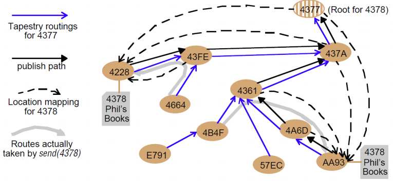

Peer to Peer¶
Overlay Networks¶
- Set of nodes and links (network)
- Built over an underlying network (e.g. the internet)

The overlay network here is A B C D and E
- We don't care if one connection e.g. B - D has a relay node inbetween
Why¶
- Adds a layer to the stack to provide something the underlying network does not have without changing the underlying network
- A service (integrated into the network) e.g. multimedia content distribution
- A routing protocol e.g. over ad-hoc network
- Other e.g. multicast integrated into the network, enhanced security
- Could we do everything in the application layer?
- Yes, but it is a mess (?)
Types of overlay¶
| Motivation | Type | Description |
|---|---|---|
| Tailored for application needs | Distributed hash tables | Prominent class of overlay network. Offers a service mapping from keys to values across a potentially large number of nodes in a completely decentralized manner (similar to a standard hash table but in a networked environment). |
| Peer-to-peer file sharing | Overlay structures that focus on constructing tailored addressing and routing mechanisms to support the cooperative discovery and use (for example, download) of files. | |
| Content distribution networks | Provides replication, caching and placement strategies to improve performance for content delivery to web users; can offer real-time performance for video streaming. | |
| Tailored for network style | Wireless ad hoc networks | Provides customized routing protocols for wireless ad hoc networks, including (i) proactive schemes to construct a routing topology over underlying nodes, and (ii) reactive schemes that establish routes on demand typically supported by flooding. |
| Disruption-tolerant networks | Overlays designed to operate in hostile environments that suffer significant node or link failure and potentially high delays. | |
| Offering additional features | Multicast | Provides access to multicast services where multicast routers are not available. |
| Resilience | Focused on improvement in robustness and availability of Internet paths. | |
| Security | Overlay networks that offer enhanced security over the underling IP network, including virtual private networks. |
Example: Pre-Microsoft Skype¶

Limitation of the Client/Server Paradigm¶
- A server offers a service
- The client finds out the address of the server
- The client starts communication with the server
- ... business logic ...
Issues
- Scalability
- As the number of users increases, there is a higher demand for computing power, storage space, and bandwidth associated with the server-side
- Reliability
- The whole network will depend on the highly loaded server to function properly
Peer-to-peer Paradigm¶
- A peer must find the other peer
- Both peers can initiate communication
- ... business logic ...
Advantages
- The system is based on the direct communication between peers
- No reliance on centralized services or resources
- The system can survive extreme changes in network composition
- This model is highly scalable
- Able to benefit from consumer technology
- Instead of having servers
Limitations and Challenges¶
Issues
- on/off behavior, participants churn
- peers servicing other peers can get out of the network
- need to join
- bootstrap
- need to discover other peers
- easier to misunderstand communication rules when implementing peers
- incentivize participation and reciprocation
- you have to have many peers
Needs protocols to
- Finding peers on the network
- Finding what services a peer provides
- Obtaining status information from a peer
- Invoking a service on a peer
- Creating, joining, and leaving peer groups
- Creating data connections to peers
- Relaying messages for other peers
Formalizing P2P¶
A peer to peer system is a set of autonomous entities (peers) able to auto-organize and sharing a set of distributed resources in a computer network. The system exploits such resources to give a service in a complete or partial decentralized way
- A peer is a node on a P2P network that forms the fundamental processing unit of any P2P solution
- Each peer has a unique Peer ID
- Each peer belongs to one or several Peer Groups
- Each peer can communicate with other peers in its group and also those in other groups
Types of P2P Applications¶
Usually, p2p applications divided into three main categories:
- Distributed computing
- File sharing
- Collaborative applications
Different purposes \Rightarrow different set of requirements
- Distributed computing applications typically require the decomposition of larger problem into smaller parallel problems
- File sharing applications require efficient search across wide area networks
- Collaborative applications require update mechanisms to provide consistency in multi-user environment
P2P File Sharing¶
Common Primitives
- Join: how do I begin participating?
- Publish: how do I advertise my file?
- Search: how to find a file/service?
- Fetch: how do I retrieve a file/use service?
Centralized P2P Networks¶
P2P file sharing killer application: Old Napster
- Free music over the Internet
Key idea: share the content, storage and bandwidth of individual (home) users

Main Challenge
- Find where a particular file is stored
Other challenges
- Scale: up to hundred of thousands or millions of machines
- Dynamicity: machines can come and go any time
Napster Solution¶
-
Assume a centralized index system that maps files (songs) to machines that are alive
-
How to find a file:
- Query the index system \to return a machine that stores the required file
- Ideally this is the closest/least-loaded machine
- FTP the file
- Query the index system \to return a machine that stores the required file
- Advantages
- Simplicity
- Easy to implement sophisticated search engines on top of the index system
- Disadvantages
- Robustness since there is a central point of failure
- Scalability since there is a central bottleneck
Algorithm¶

Search Operation¶
- The client sends keywords to search with
- The server searches its list with the keywords
- The server returns a list of hosts -
<ip_address, portnum>tuples - to client - The client pings each host in the list to find transfer rates
- The client fetches file from best host
Issues¶
- Centralized server a source of congestion
- Centralized server single point of failure
- No security: plaintext messages and passwords
- napster.com declared to be responsible for users’ copyright violation
- "Indirect infringement"
Unstructured P2P Networks - Gnutella¶
- Peers form an overlay network
- Query Flooding:
- Join: on startup, client contacts a few other nodes (learn from bootstrap-node); these become its “neighbors”
- Publish: no need
- Search: ask “neighbors”, who ask their neighbors, and so on... when/if found, reply to sender.
- Fetch: get the file directly from peer
Search¶

Advantages:
- Totally decentralized
- Highly robust
Disadvantages:
- Not scalable (need to contact all peers to perform a deterministic search)
- The entire network can be swamped with request
- Each request needs a TTL (limited scope flooding)
Avoiding Excessive Traffic¶
- Query forwarded to all neighbors except peer from which received
- Each Query (identified by DescriptorID) forwarded only once
- To avoid duplicate transmissions, each peer maintains a list of recently received messages
- Duplicates with same DescriptorID and Payload descriptor (msg type, e.g., Query) are dropped
- QueryHit routed back only to peer from which Query received with same DescriptorID
- QueryHit with DescriptorID for which Query not seen is dropped
Download¶
-
Requester chooses "best" QueryHit responder
-
Initiates HTTP request directly to responder's IP+PORT
-
http GET /get/<File Index>/<File Name>/HTTP/1.0\r\n Connection: Keep-Alive\r\n Range: bytes=0-\r\n User-Agent: Gnutella\r\n \r\n
-
-
Usage of HTTP since it is widely used, and widely accepted by firewalls
-
range field in the GET request to support partial file transfers.
Comparison - Napster v Gnutella¶
Napster
- Pros
- Simple
- Search scope is O(1)
- Cons
- Server maintains O(N) State
- Server performance bottleneck
- Single point of failure
Gnutella
- Pros
- Simple
- Fully de-centralized
- Search cost distributed
- Cons
- Search scope is O(N)
- Search time is O(???)
- Large number of freeloaders
"New" Gnutella Protocol¶
- Protocol originally called FastTrack
-
Implemented initially in Kazaa, KazaaLite, Grokster
- Then also in Gnutella
-
Like Gnutella, but with some peers designated as supernodes
- Takes advantage of “healthier” participants in the system
- Contain a Napster-like directory of files
-
“Smart” Query Flooding:
- Join: on startup, client contacts a “supernode”; may at some point become one itself
- Publish: send list of offered files to supernode
- Search: send query to supernode, supernodes flood query amongst themselves
- Fetch: get the file directly from peer(s); can fetch simultaneously from multiple peers
Discussion¶
- A supernode stores a directory listing a subset of nearby (
<filename,peer pointer>), similar to Napster servers - Supernode membership changes over time
- Any peer can become (and stay) a supernode, provided it has earned enough reputation
- Reputation of a user affected by length of periods of connectivity and total number of uploads
- More sophisticated Reputation schemes invented, based on economics
Pros
- Tries to balance between search overhead and space needs
- Tries to take into account node heterogeneity:
- Bandwidth
- Host Computational Resources
Cons
- Still no real guarantees on search scope or search time
Structured P2P Network - Chord¶
API based on unique GUID associated to data
put(GUID, data)datastored in replicas at all nodes responsible for the object identified byGUID
remove(GUID)- Deletes all references to GUID and the associated data
value = get(GUID)- data associated with GUID is retrieved from one of the responsible nodes
Alternate vision:
publish(GUID)- GUID computed from the object
unpublished(GUID)- Makes the object corresponding to GUID inaccessible
sendToObj(msg, GUID, [n])- Invocation message is sent to an object
- E.g: request to download a TCP connection for data transfer, sent to n replicas of the object
- Invocation message is sent to an object
Identifier to Node Mapping¶

Lookup¶
- Each node maintains its successor
- Route packet (ID, data) to the node responsible for ID using successor pointers

Robustness of the Network¶
- Each node A periodically sends a stabilize() message to its successor B
- Upon receiving a stabilize() message, node B
- returns its predecessor B’=pred(B) to A by sending a notify(B’) message
- Upon receiving notify(B’) from B,
- if B’ is between A and B, A updates its successor to B’
- otherwise, A does nothing
Joining Operation¶
Init¶
- Node with id=50 joins the ring
- Node 50 needs to know at least one node already in the system
- Assume known node is 15

Find Successor¶
- Node 50: send join(50) to node 15
- Node 44: returns node 58, since it is responsible for GUID 50
- Node 50 updates its successor to 58
Stabilize() Successor¶
- Node 50: send stabilize() to node 58
- Node 58:
- update predecessor to 50
- send notify() back to its new predecessor (50)

Predecessor Finds You¶
- Sooner or later, node 44 sends a stabilize message to its successor, node 58
- Node 58 reply with a notify message
- Node 44 updates its successor to 50

Predecessor stabilize() you¶
- Node 44 sends stabilize message to its new successor, node 50
- Node 50 sets its predecessor to node 44
*
Achieving Efficiency with Finger Tables¶
- ith entry at peer with id n is first peer with id \geq n+2^i (\mod 2^m)
Achieving Robustness¶
- To improve robustness each node maintains the k (> 1) immediate successors instead of only one successor
- In the notify() message, node A can send its k-1 successors to its predecessor B
- Upon receiving notify() message, B can update its successor list by concatenating the successor list received from A with A itself
Files¶
- GUID of files in the same namespace
- File is stored at first peer with id greater than or equal to its key
- What is into node 45
- Data for GUID 37 or
<ip, port>for the peer offering file 37, or- ...
Analysis¶
- Search takes O(log(N)) time
- Proof
- (intuition): at each step, distance between query and peer-with-file reduces by a factor of at least 2
- (intuition): after log(N) forwardings, distance to key is at most 2^m / 2^{log(N)} = 2^m / N
- Proof
- O(log(N)) search time holds for file insertions too (in general for routing to any GUID / key)
- “Routing” can thus be used as a building block for
- All operations: insert, lookup, delete
- “Routing” can thus be used as a building block for
- Size of finger table: O(log(N))
Comparative Performance¶
Structured P2P Network - Pastry¶
 Youtube Video explaining Pastry
Youtube Video explaining Pastry
- Assigns ids to nodes, just like Chord (using a virtual ring)
- Leaf Set - Each node knows its successor(s) and predecessor(s)
- Routing tables based on prefix matching
- Consider a peer with id
01110100101.- It maintains a neighbor peer with an id matching each of the following prefixes (* = starting bit differing from this peer’s corresponding bit):
*0*01*011*- ...
0111010010*
- When it needs to route to a peer, say
01110111001it starts by forwarding to a neighbor with the largest matching prefix, i.e.011101*
Locality¶
- For each prefix, say
011*, among all potential neighbors with the matching prefix, the neighbor with the shortest roundtrip-time is selected- Among the ones it knows
- Sniff over packets, looking for “better deals”
- Since shorter prefixes have many more candidates (spread out throughout the Internet), the neighbors for shorter prefixes are likely to be closer than the neighbors for longer prefixes
- Thus, in the prefix routing, early hops are short and later hops are (physically, RTT) longer
First Four Rows of a Pastry Routing Table¶

The routing table is located at a node whose GUID begins 65A1. Digits are in hexadecimal.
The n’s represent [GUID, IP address] pairs specifying the next hop to be taken by messages addressed to GUIDs that match each given prefix.
Grey- shaded entries indicate that the prefix matches the current GUID up to the given value of p: the next row down or the leaf set should be examined to find a route. Although there are a maximum of 128 rows in the table, only \log_{16} N rows will be populated on average in a network with N active nodes.
Routing Example¶
- Routing a message from node
65A1FCtoD46A1C. - With the aid of a well-populated routing table, the message can be delivered in ~\log_{16} (N) hops

Tapestry¶
- Same routing of Pastry: prefix routing
-
DOLR interface
publish(GUID)unpublish(GUID)sendToObj(msg, GUID, [n])
-
Main difference: flexibility since application can place replicas close (in network distance) to frequent users of resources for:
- reduced latency
- minimized network load
- tolerance of network and host failures

Replicas of the file Phil's Books (G=4378) are hosted at nodes 4228 and AA93.
Node 4377 is the root node for object 4378.
The Tapestry routings shown are some of the entries in routing tables.
The publish paths show routes followed by the publish messages laying down cached location mappings for object 4378.
The location mappings are subsequently used to route messages sent to 4378.